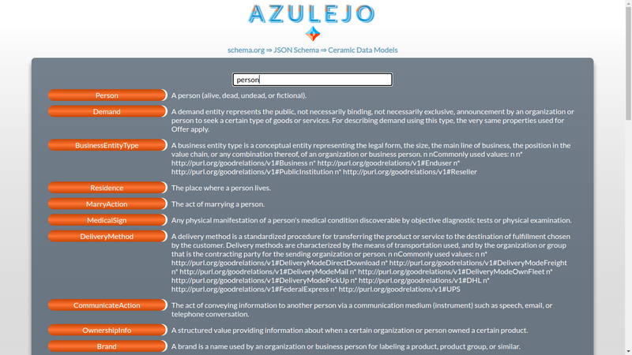
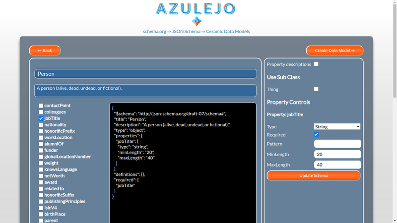
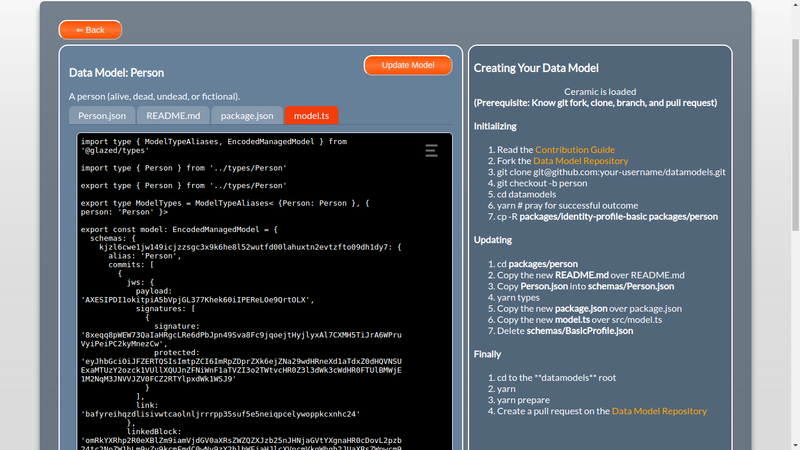

Using Azulejo #
Azulejo is composed of three parts:
- The search page for searching for schemas from schema.org
- The schema editor for editing types and properties of a generated JSON Schema
- The model export tool for generating files for use in Ceramic Data Models
Search Page #
Use the search page to search for schema objects in the Schema.org data set.
Enter text in the search bar and the schema names and descriptions will be searched. Click the button containing the schema name to use that schema as a base for your Data Model.

Schema Editor #
When a schema has been selected it is converted into a JSON Schema as this is the format used by Ceramic Data Models.
You can select and edit the fields you wish to add to your data model.
- Click on the main Name and Description to edit them for your particular model
- Check Property descriptions to add descriptions to the model
- Check one or more Sub Classes and their properties will be made available for selection
- Don’t forget to click Update Schema to apply your property changes to the schema
- Click Create Data Model to begin the process of generating a Data Model from the schema

Model Export #
A Ceramic Data Model is an npm package containing files generated from one or more JSON schemas.
The instructions in the side panel explain the process of forking the existing Data Model repository and adding the contents of the files generated by Azulejo.
There are extra things you can do at this point:
- Click on the SchemaName.json file to perform manual edits, or to add an externally created JSON schema
- In the package.json tab, add the author name, version and tags
When you are happy with the model, click Update Model. This will generate a new model.ts that contains the exports that will be pulled into Ceramic applications based on your schema.
Finally, follow the side panel instructions to add the content from the edited files for use in your pull request on the Ceramic DataModels repository.
